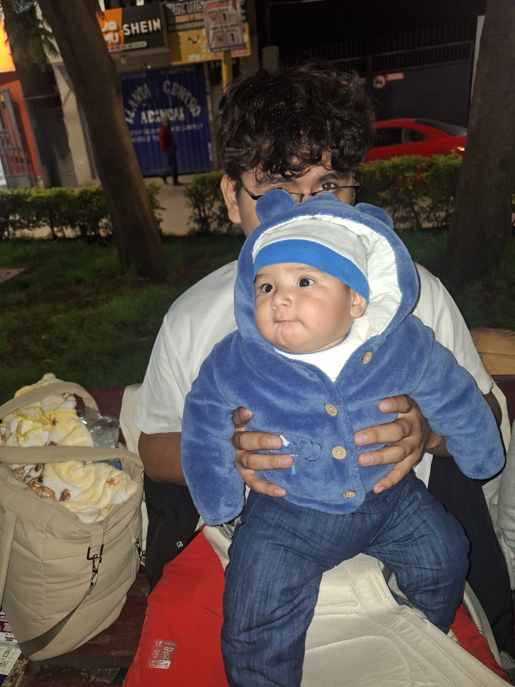
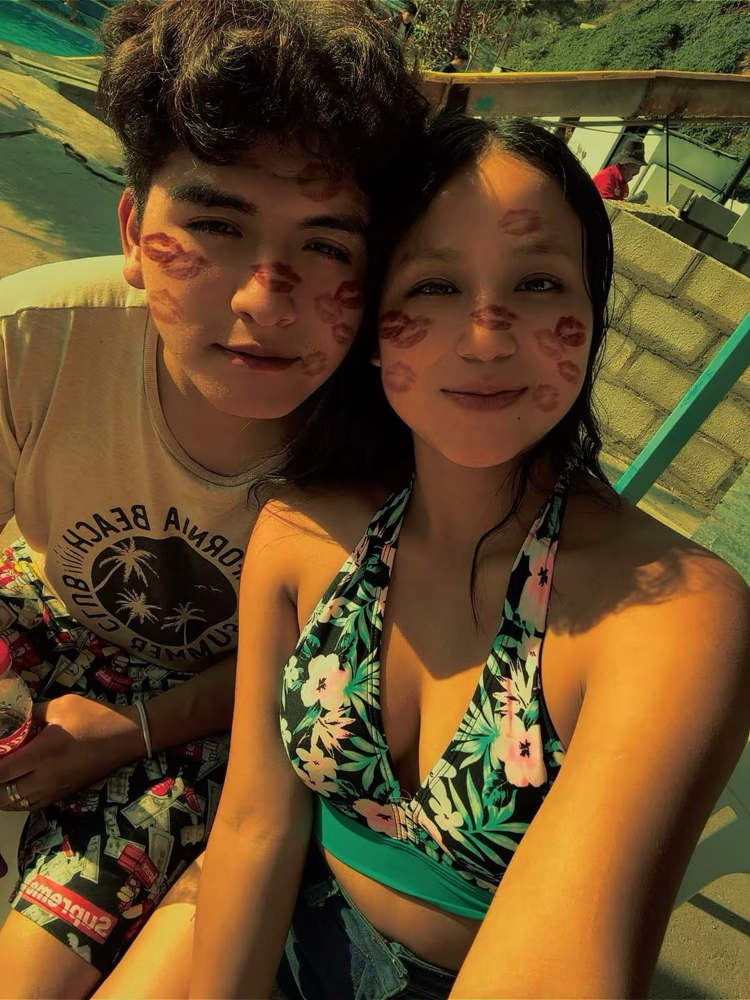
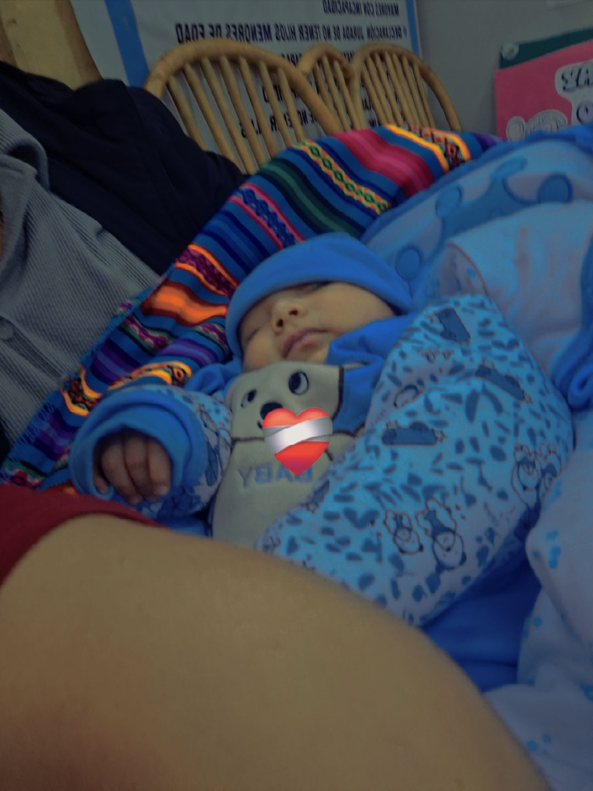
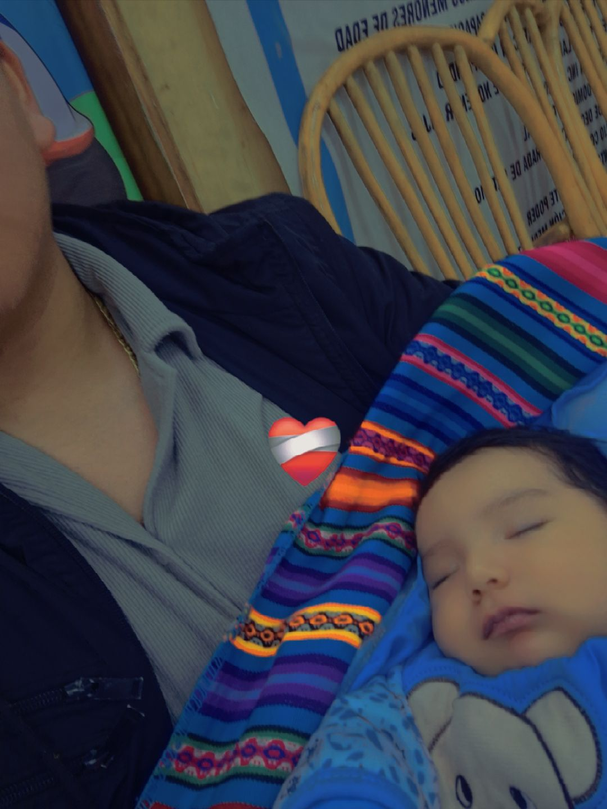
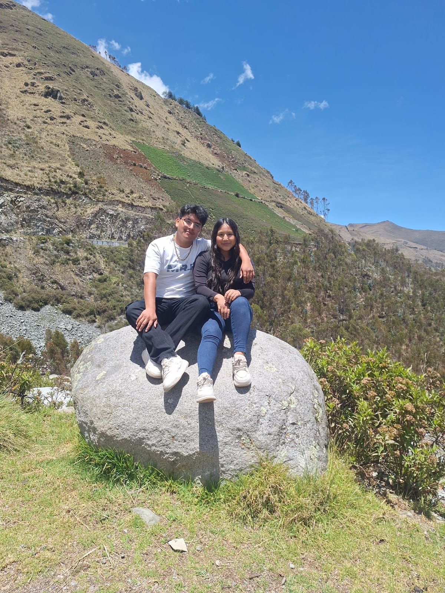
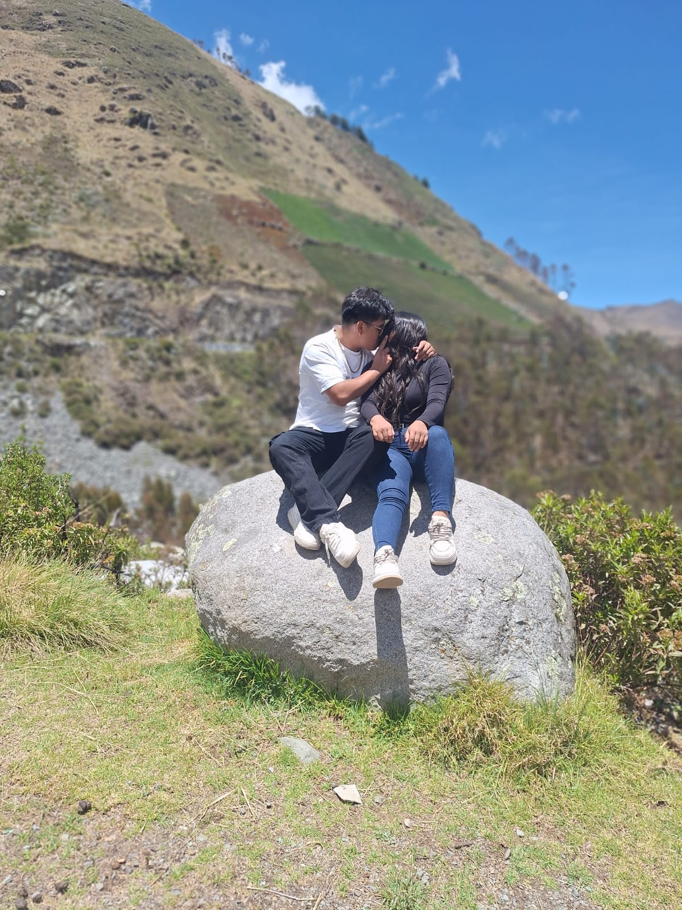
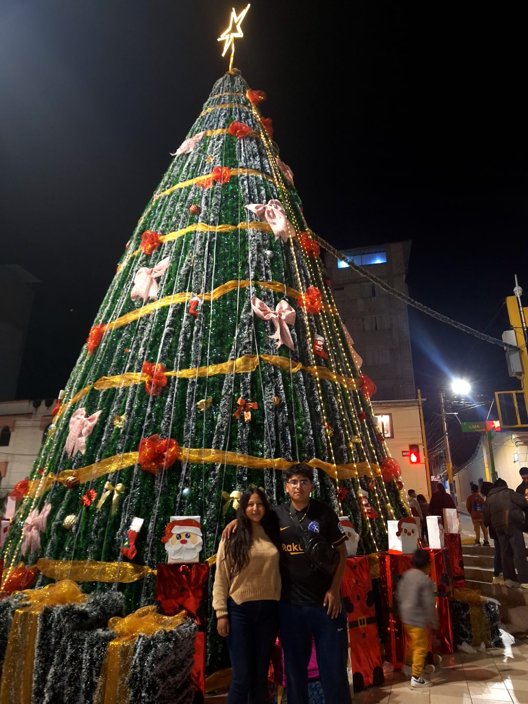
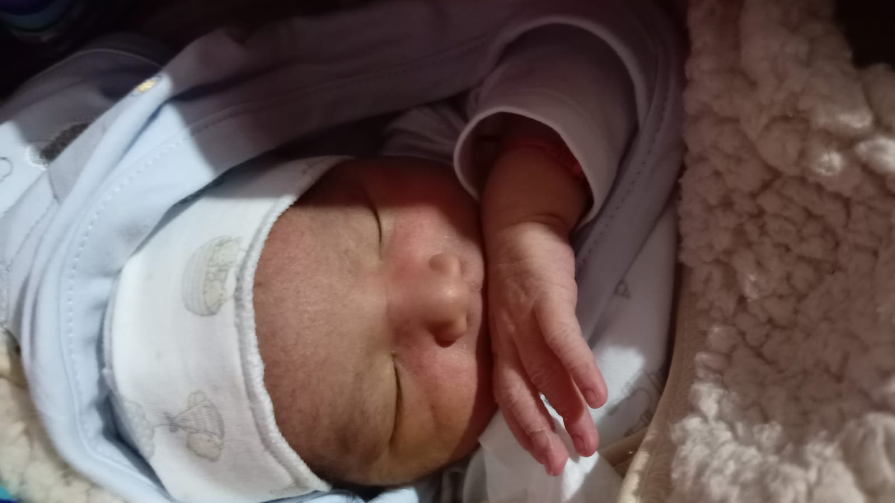

Mi Historia Familiar
Mi familia es lo más importante en mi vida y representa la mayor motivación que tengo para seguir adelante. Cada esfuerzo que realizo, cada meta que me propongo y cada logro que alcanzo tiene como principal objetivo brindarles un mejor futuro. Para mí, la familia no solo es un grupo de personas, sino un lugar donde encuentro apoyo, comprensión, amor y la fuerza necesaria para enfrentar cualquier dificultad que se presente.
Todo comenzó cuando conocí a mi pareja Yolanda, una persona muy especial que llegó a mi vida en el momento menos esperado, pero en el más necesario. Desde el primer instante en que empezamos a hablar, hubo una conexión especial que con el tiempo fue creciendo. Poco a poco fuimos conociéndonos mejor, compartiendo momentos, experiencias y sueños, lo que nos permitió construir una relación basada en el respeto, la confianza y la sinceridad.
Nuestra relación no siempre fue fácil, ya que como toda pareja hemos tenido momentos difíciles que nos han puesto a prueba. Sin embargo, en lugar de rendirnos, decidimos seguir adelante juntos, aprendiendo de cada situación y fortaleciéndonos como pareja. Cada obstáculo superado nos hizo más fuertes y nos enseñó la importancia de la comunicación, el apoyo mutuo y el compromiso.
Con el tiempo, nuestra relación dio un paso muy importante con la llegada de nuestro hijo Jhuliam Kennay, quien se convirtió en la mayor bendición de nuestras vidas. Su nacimiento marcó un antes y un después en nuestra historia, ya que desde ese momento nuestras prioridades cambiaron completamente. Empezamos a ver la vida con más responsabilidad, con más amor y con el deseo de construir un futuro mejor para él.
Ser padre ha sido una de las experiencias más hermosas y significativas que he vivido. Cada momento junto a mi hijo, desde sus primeras sonrisas hasta cada pequeño logro, llena mi vida de felicidad y orgullo. Él es la razón por la cual me esfuerzo cada día, buscando ser un buen ejemplo y brindarle todo el amor y apoyo que necesita para crecer como una gran persona.
Actualmente, ya estamos cerca de cumplir dos años de relación, y durante este tiempo hemos vivido muchas experiencias que nos han unido aún más como familia. Hemos compartido alegrías, retos, aprendizajes y momentos inolvidables que han fortalecido nuestro vínculo. Cada día seguimos aprendiendo juntos, creciendo como pareja y como padres, siempre buscando mejorar y salir adelante.
Amo profundamente a mi pareja Yolanda y a mi hijo Jhuliam Kennay. Ellos son mi mayor tesoro y la razón por la cual nunca me rindo. Gracias a ellos tengo la motivación para seguir estudiando, superarme y luchar por mis metas. Mi familia es mi mayor orgullo, mi felicidad y el motor que impulsa mi vida hacia adelante.
Mi objetivo es seguir construyendo un hogar lleno de amor, respeto y unión, donde siempre podamos apoyarnos mutuamente y enfrentar juntos cualquier desafío. Sé que aún quedan muchos caminos por recorrer, pero tengo la seguridad de que, mientras estemos juntos, podremos lograr todo lo que nos propongamos.
Fotos de mi familia







